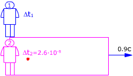

| El rectángulo representa un recinto que se mueve respecto
al observador 1 con velocidad 0.9c  Observador 1 (Laboratorio): Observador 2 (Recinto) Aplicando la conversión de tiempos resulta: $$\begin{aligned} &\Delta t_1=\frac{\Delta t_2}{\gamma}\\[6pt] &\gamma=\sqrt{1-\left(\frac{v}{c}\right)^{2}}=\sqrt{1-\left(\frac{0{,}9\,c}{c}\right)^{2}}=0{,}436\\[6pt] &\Delta t_1=\frac{2{,}6\cdot10^{-8}\ \mathrm{s}}{0{,}436}=5{,}96\cdot10^{-8}\ \mathrm{s} \end{aligned}$$ Para el observador 1 (Laboratorio), el pión vive 5.96·10-8 s y durante este tiempo se mueve con velocidad 0.9c. La distancia recorrida será: $$d_1=v\,\Delta t_1=0{,}9\cdot3\cdot10^{8}\ \mathrm{\frac{m}{s}}\ 5{,}96\cdot10^{-8}\ \mathrm{s}=16{,}1\ \mathrm{m}$$ El pión, visto desde el laboratorio recorre 16.1 m |